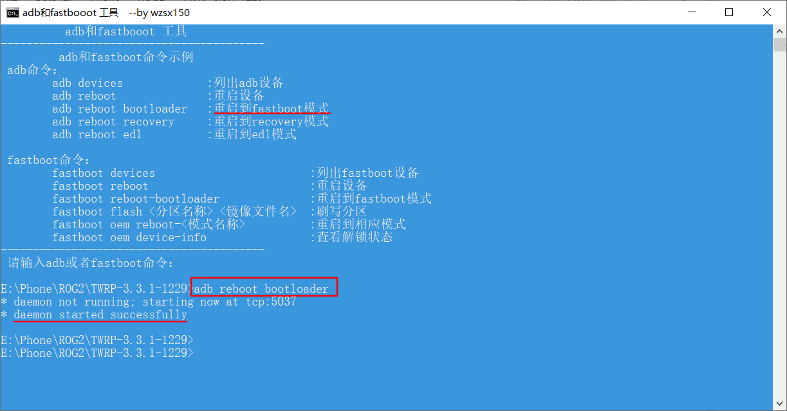
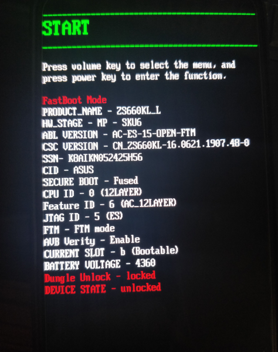
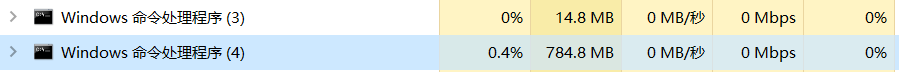
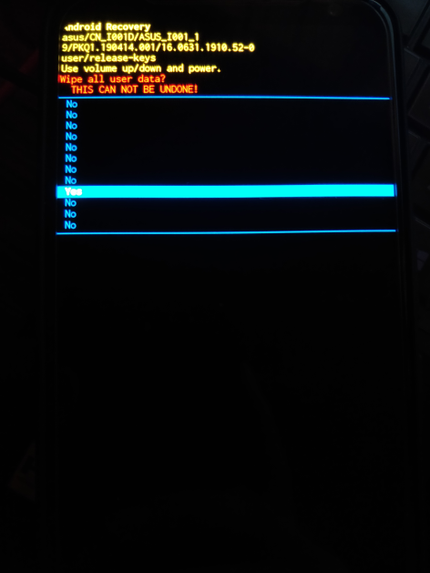
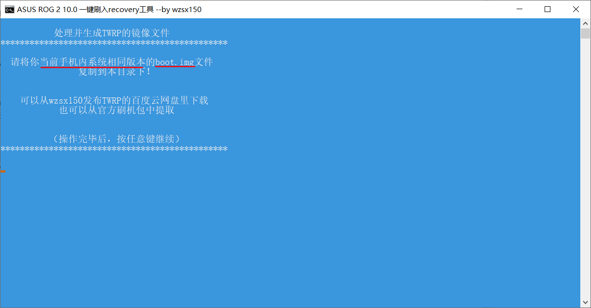
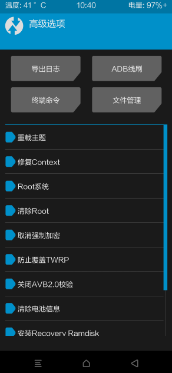

最近开始学习安卓开发，想着不装虚拟机了，直接把项目放到手机上跑，又在酷安看到大佬们说着Android Q怎么怎么好，在手机专区看了很多大佬分享的经验后，笑着看了一眼充当半年游戏机的ROG2，开整！
前言
其实已经很久没有折腾刷机了，之前买的刷机小王子一加5T都用着一年前的系统，所以现在新款手机多了一些新的操作都不太了解，不像以前TWRP刷进去后就是各种包随便折腾。给ROG2刷机的原因其实还有ROG2的国内最新版系统存在Bug，网络会断流，游戏会黑屏卡死等，想试试换个系统能不能解决这些问题。
准备
设备配件
ROG2手机一部（废话），原配数据线，9008工程线（可能用到）。
只要按照步骤来是不会变砖的
刷机工具
百度盘：链接：https://pan.baidu.com/s/19LW5cbcoaFMJULnNXQc5Lw 提取码：e41d
用到的文件
1.线刷包中的CN_ZS660KL_16.0631.1910.52包，为国行版Android 9的系统，万一出错可以刷回来
2.安卓10中的beta6.zip包，为ROG2国际版安卓10的第六版，就是要刷这个包
3.华硕ROG2 TWRP中的安卓10 TWRP，TWRP-3.3.1-1229-ASUS_ROG2-10.0-CN-wzsx150-fastboot.7z,用adb命令控制手机，TWRP的img在beta6.zip已经有了，可以刷完系统后使用里面的刷入rec.bat直接刷入
解锁
如果还没解锁可以使用官方的ZS660KL_SIGNED_UnlockTool_9.1.0.10_190702_fulldpi.apk来解锁，也可以使用网盘中的ASUS_ROG2_ZS660KL_UnlockBootloader.zip解锁，这个是XDA上大神做的绕过官方实现解锁，支持回锁，压缩包里有操作视频教程。绕过官方解锁原贴
开始刷机
打开USB调试
将手机用数据线连接到电脑，注意手机接的是侧边的接口，刷机都是连接侧边才能识别到手机
开机状态在设置-系统-关于手机-软件信息-版本号，多次点击版本号进入开发者模式，返回到设置-系统-开发者模式中打开USB调试，打开这个是为了方便电脑直接使用adb命令控制手机进入各种模式
进入Fastboot模式
解压TWRP-3.3.1-1229-ASUS_ROG2-10.0-CN-wzsx150-fastboot.7z，双击打开里面的打开CMD命令行.bat执行命令adb reboot BootLoader即可进入Fastboot模式，上面还有其他命令示范

第二种方法是将手机关机，然后按住电源键+音量加按键，出现设备解锁不安全提示时快速按两下电源键跳过，然后继续按住电源键+音量加不放，就可以进入Fastboot模式，如下图

我是使用了XDA的那个解锁工具，才会有更详细的设备信息显示，只要进到这里就可以开始刷机了
线刷包刷入
解压beta6.zip（注意路径不要有中文或空格）,双击A刷入点我.bat,会提示进度信息，等待它跑完，大概需要3-5分钟，如果卡在了第一条命令flash abl_b abl_b.img上，请检查手机是否连接侧边接口并进入fastboot模式，刷入过程中可以打开进程管理器看到CMD在占用几百M内存，表示正在刷入，如果没有，请关闭该窗口重新双击A刷入点我.bat

刷入结束后CMD窗口会自动关闭，手机会重启，此时手机进入开机后会进入官方的rec，需要清除数据才能进入系统，使用音量键选择电源键确认，将数据清除

如果没有线刷CN版的线刷包，直接在原本国内版的基础上刷入beta6，可能不会出现这个界面，而是直接进入了系统，这样就可以正常使用了
或者刷入beta6后没有进入Android 10系统还是原来的系统，你需要下面的操作切换到B分区，因为beta6线刷包默认刷到B分区。
1.手机重新进入fastboot模式（方法参照上文）
2.打开TWRP压缩包解压出来的打开CMD命令行.bat
3.输入命令
1 | fastboot getvar current-slot #查看当前启动分区 |
以后如果需要刷回官方的国行线刷包，可以使用此方法回到A分区，将CN版系统刷到A分区
如果刷入了TWRP，可以在重启里面找到分区切换，点击切换后再重启就好了
4.使用电源键确认Start进入系统，切换分区重启会需要平时更长一点时间
刷入Rec
进入到Fastboot模式，双击beta6中的刷入rec.bat即可，包内Rec的img是处理好的，可以直接刷入，如果以后更新了系统，就需要提取原版系统的boot.img文件再使用TWRP-3.3.1-1229-ASUS_ROG2-10.0-CN-wzsx150-fastboot.7z双击打开recovery-twrp一键刷入工具.bat，按照里面的步骤处理boot文件，再使用命令进行刷入

获取ROOT
不使用beat6包里的打开root.bat，刷入Rec后，进入Rec-高级-ROOT系统 即可开启ROOT

总结
1.因为新版有A/B分区，导致我刷入了Android 10的包后没进入B分区，以为没刷上，折腾了几遍才找到使用ADB命令切换启动分区。
2.还有就是第一次从刷入beta6包后可以进入Android 10系统，用命令切换回A分区，国内版的Android 9系统甚至还能用，但是出现插入耳机失效的情况，所以后面就先线刷了CN-1910.52的包，再刷入beta6的包解决，这样A分区的系统就会不可用，可以不去管它。
3.刚开始刷入Rec的时候，不知道rec的img文件是需要原系统的boot.img文件用wzsx150大佬的工具处理后才能刷入，没处理直接刷入导致WiFi打不开。（beta6包里的rec是我处理好的，可以使用里面的刷入rec.bat刷入）
感谢酷安的大佬分享系统包，还有ROG2手机交流群里的大佬的耐心解答